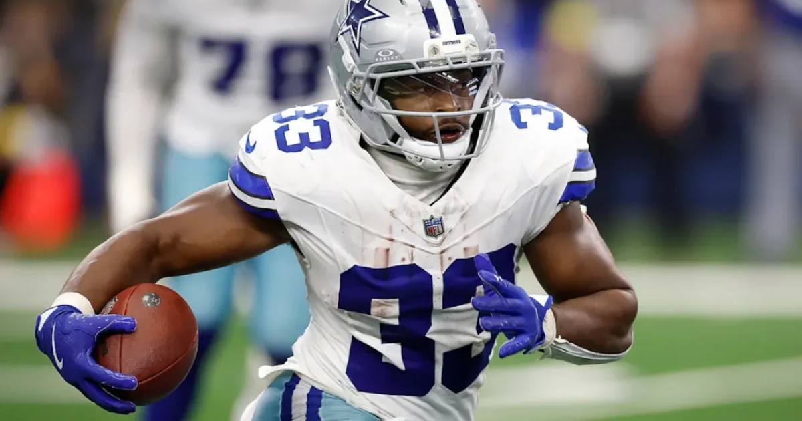

Cowboys Run Past Eagles 38-21
Dallas snapped a two-game losing streak with a 38-21 Monday night win over Philadelphia, powered by Javonte Williams' career-high 155 rushing yards.

Disclosure: this post contains affiliate links. I earn a commission on qualifying purchases.
The result
Dallas ended a two-game losing streak with the Monday night win over Philadelphia, closing out Week 7.
Final: Dallas Cowboys 38, Philadelphia Eagles 21.
Ground game wins it
Javonte Williams powered the win on the ground with a career-high 155 rushing yards.
That rushing performance is the story of the night: when Dallas needed to snap its skid, it leaned on the run game — and Williams delivered the best rushing night of his career.
Why it matters
• The win stops Dallas' two-game losing streak in its tracks.
• It closes out Week 7 with a divisional statement on Monday night.
• Williams' 155 yards set a new personal benchmark to build on.
Watch
Source: Dallas Cowboys vs Philadelphia Eagles Game Highlights | 2026 NFL Season Week 7 (NFL) — full game highlights from the Week 7 Monday night matchup.
Gear up: Fanatics